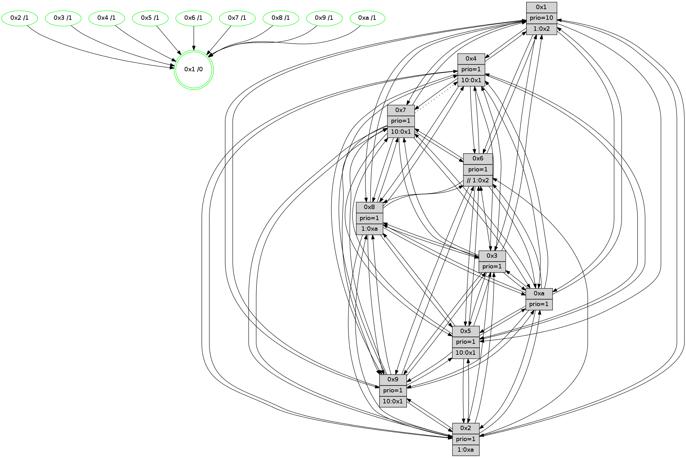

>> << IDX [start] -100 -25 -5 +0 +5 +25 +100 [1355.22573614]
 Previous packets
----------------------------------------------------------------------
1350.496953 beacon01(faad) #0 coord=01,02,03,04,05,06,07,0a,09,08 cycle=688.0ms assoc
-- color-indic=1 64 df d4
1350.506934 beacon02(faad) #0 coord=01,02,03,04,05,06,07,0a,09,08 cycle=688.0ms assoc 64 4c e5
1350.516935 beacon03(faad) #0 coord=01,02,03,04,05,06,07,0a,09,08 cycle=688.0ms assoc 64 36 a8
1350.526935 beacon04(faad) #0 coord=01,02,03,04,05,06,07,0a,09,08 cycle=688.0ms assoc 64 41 42
1350.536936 beacon05(faad) #0 coord=01,02,03,04,05,06,07,0a,09,08 cycle=688.0ms assoc 64 3b 0f
1350.546938 beacon06(faad) #0 coord=01,02,03,04,05,06,07,0a,09,08 cycle=688.0ms assoc 64 b5 d8
1350.556937 beacon07(faad) #0 coord=01,02,03,04,05,06,07,0a,09,08 cycle=688.0ms assoc 64 cf 95
1350.566941 beacon0a(faad) #0 coord=01,02,03,04,05,06,07,0a,09,08 cycle=688.0ms assoc 64 be 9e
1350.586941 beacon08(faad) #0 coord=01,02,03,04,05,06,07,0a,09,08 cycle=688.0ms assoc 64 4a 04
1350.598474 [Hello(9): seq=805 sym=2,5,3,4,7,6,8,10,1 sysInfo=hasWarning stat=2:12,9,12,10/5:0,4,14,7/3:13,14,4,3/4:13,4,15,1/7:14,11,4,4/6:10,1,10,13/8:12,10,0,5/10:6,5,3,5/1:14,0,0,1]
1350.601818 [Hello(10): seq=794 sym=6,2,3,8,7,5,9,4,1 sysInfo=hasWarning stat=6:10,1,12,3/2:9,12,1,0/3:15,10,1,14/8:7,6,12,3/7:10,10,9,9/5:15,15,10,0/9:5,8,1,0/4:3,7,6,1/1:9,12,9,1]
1350.604838 [Color(1) seq=541 @0:0 prio=10 >1.@2,1.@3,1.@4,1.@5]
1350.607693 [Hello(7): seq=861 sym=2,3,5,6,8,9,10,1 asym=4 sysInfo=hasWarning stat=2:12,11,0,3/3:7,1,2,3/5:2,0,7,2/6:14,11,0,11/8:1,6,8,0/9:9,9,7,1/10:13,3,13,7/1:13,3,11,0/4:8,1,2,0]
1350.610425 [Hello(8): seq=805 sym=5,2,3,7,9,6,4,10,1 sysInfo=hasWarning stat=5:0,15,3,0/2:9,3,8,12/3:4,6,12,3/7:3,10,1,1/9:0,1,6,4/6:6,4,10,15/4:9,0,2,0/10:8,10,11,5/1:8,0,14,0]
1350.617844 [Color(8) seq=460 @0:0 prio=1 >1.@a]
1350.622306 [Color(4) seq=400 @0:0 prio=1 >10.@1,1.@2,1.@3,1.@5]
1350.628080 [Color(7) seq=389 @0:0 prio=1 >10.@1,1.@5,1.@6,1.@8]
----------------------------------------------------------------------
1351.285083 beacon01(faad) #0 coord=01,02,03,04,05,06,07,0a,09,08 cycle=688.0ms assoc
-- color-indic=1 64 eb cc
1351.295065 beacon02(faad) #0 coord=01,02,03,04,05,06,07,0a,09,08 cycle=688.0ms assoc 64 78 fd
1351.305064 beacon03(faad) #0 coord=01,02,03,04,05,06,07,0a,09,08 cycle=688.0ms assoc 64 02 b0
1351.315065 beacon04(faad) #0 coord=01,02,03,04,05,06,07,0a,09,08 cycle=688.0ms assoc 64 75 5a
1351.325065 beacon05(faad) #0 coord=01,02,03,04,05,06,07,0a,09,08 cycle=688.0ms assoc 64 0f 17
1351.335066 beacon06(faad) #0 coord=01,02,03,04,05,06,07,0a,09,08 cycle=688.0ms assoc 64 81 c0
1351.345066 beacon07(faad) #0 coord=01,02,03,04,05,06,07,0a,09,08 cycle=688.0ms assoc 64 fb 8d
1351.355070 beacon0a(faad) #0 coord=01,02,03,04,05,06,07,0a,09,08 cycle=688.0ms assoc 64 8a 86
1351.365069 beacon09(faad) #0 coord=01,02,03,04,05,06,07,0a,09,08 cycle=688.0ms assoc 64 04 51
1351.375072 beacon08(faad) #0 coord=01,02,03,04,05,06,07,0a,09,08 cycle=688.0ms assoc 64 7e 1c
1351.386636 [Hello(1): seq=771 sym=4,2,9,5,10,3,8,6,7 sysInfo=coloring-mode-on,ColoringModeRequestCalled stat=4:5,11,2,2/2:0,1,11,5/9:15,10,1,1/5:8,7,1,8/10:12,8,15,8/3:1,11,12,10/8:1,3,13,2/6:6,7,12,0/7:0,5,5,1]
1351.390281 [Hello(3): seq=862 sym=1,7,6,2,4,8,9,10,5 sym= sysInfo=hasWarning stat=]
1351.392891 [Color(9) seq=421 @0:0 prio=1 >10.@1,1.@5,1.@a]
1351.395343 [Color(3) seq=491 @0:0 prio=1]
1351.397190 [Hello(5): seq=862 sym=7,6,4,3,9,8,10,2 sysInfo=hasWarning stat=7:9,13,10,0/6:15,4,9,4/4:14,3,15,14/3:6,13,4,1/9:10,11,13,10/8:11,13,13,4/10:13,11,14,9/2:3,10,5,7]
1351.402217 [Hello(2): seq=858 sym=4,5,7,6,3,9,8,10,1 sysInfo=hasWarning stat=4:14,5,1,12/5:6,0,10,2/7:11,3,2,1/6:1,4,1,0/3:1,4,0,0/9:5,0,5,9/8:5,5,13,12/10:14,10,0,11/1:3,8,9,0]
1351.405379 [Color(2) seq=438 @0:0 prio=1 >1.@a]
1351.408774 [Color(10) seq=451 @0:0 prio=1]
1351.419160 PARSE ERROR************************
Traceback (most recent call last):
File "PacketAnalysis.py", line 167, in showOperaPacket
structPacket = OperaPacketParse.parsePacket(rawPacket)
File "../../pkg-python/HipSens/Core/OperaPacketParse.py", line 461, in parsePacket
return parseHelloMessage(data)
File "../../pkg-python/HipSens/Core/OperaPacketParse.py", line 127, in parseHelloMessage
assert struct.calcsize("H")*len(neighAddrList) == len(linkList)
AssertionError
48 32 06 00 03 5e 00 02 02 0e 05 00 04 00 07 00 09 00 08 00 0a 00 01 00 01 02 03 00 53 04 00 02 00 00 4c 10 31 b1 75 78 ff 59 ac 03 68 c6 d2 75 1c af 00 20 4c 63
1351.424152 [Color(6) seq=494 @0:0 prio=1 >>1.@2,1.@3,1.@4]
----------------------------------------------------------------------
1352.073213 beacon01(faad) #0 coord=01,02,03,04,05,06,07,0a,09,08 cycle=688.0ms assoc
-- color-indic=1 64 57 c9
1352.083196 beacon02(faad) #0 coord=01,02,03,04,05,06,07,0a,09,08 cycle=688.0ms assoc 64 c4 f8
1352.093195 beacon03(faad) #0 coord=01,02,03,04,05,06,07,0a,09,08 cycle=688.0ms assoc 64 be b5
1352.103196 beacon04(faad) #0 coord=01,02,03,04,05,06,07,0a,09,08 cycle=688.0ms assoc 64 c9 5f
1352.113197 beacon05(faad) #0 coord=01,02,03,04,05,06,07,0a,09,08 cycle=688.0ms assoc 64 b3 12
1352.123197 beacon06(faad) #0 coord=01,02,03,04,05,06,07,0a,09,08 cycle=688.0ms assoc 64 3d c5
1352.133198 beacon07(faad) #0 coord=01,02,03,04,05,06,07,0a,09,08 cycle=688.0ms assoc 64 47 88
1352.143201 beacon0a(faad) #0 coord=01,02,03,04,05,06,07,0a,09,08 cycle=688.0ms assoc 64 36 83
1352.163201 beacon08(faad) #0 coord=01,02,03,04,05,06,07,0a,09,08 cycle=688.0ms assoc 64 c2 19
1352.175051 [Hello(10): seq=795 sym=6,2,3,8,7,5,9,4,1 sysInfo=hasWarning stat=6:11,2,12,3/2:9,12,1,0/3:15,10,1,14/8:8,7,12,3/7:11,11,9,9/5:15,15,10,0/9:5,8,1,0/4:4,8,6,1/1:10,13,9,1]
1352.179054 [Color(1) seq=542 @0:0 prio=10 >1.@2,1.@3,1.@4,1.@5]
1352.180964 [Hello(9): seq=806 sym=2,5,3,4,7,6,8,10,1 sysInfo=hasWarning stat=2:13,10,12,10/5:1,4,14,7/3:13,15,4,3/4:14,5,15,1/7:15,12,4,4/6:11,2,10,13/8:13,11,0,5/10:7,6,3,5/1:15,1,0,1]
1352.183968 [Hello(4): seq=862 sym=5,8,6,2,3,9,10,1 sysInfo= stat=5:0,12,2,1/8:1,3,0,0/6:11,14,9,14/2:4,10,2,0/3:11,9,11,14/9:7,2,11,1/10:4,0,15,14/1:4,9,13,1]
1352.188243 [Color(4) seq=401 @0:0 prio=1 >10.@1,1.@2,1.@3,1.@5]
1352.191250 [Hello(7): seq=862 sym=2,3,5,6,8,9,10,1 asym=4 sysInfo=hasWarning stat=2:13,12,0,3/3:8,2,2,3/5:3,0,7,2/6:15,12,0,11/8:1,6,8,0/9:10,10,7,1/10:13,4,13,7/1:14,3,11,0/4:8,1,2,0]
1352.194150 [Color(7) seq=390 @0:0 prio=1 >10.@1,1.@5,1.@6,1.@8]
1352.197853 [Hello(8): seq=806 sym=5,2,3,7,9,6,4,10,1 sysInfo=hasWarning stat=5:1,15,3,0/2:10,4,8,12/3:5,7,12,3/7:3,11,1,1/9:1,2,6,4/6:7,5,10,15/4:9,1,2,0/10:9,11,11,5/1:9,0,14,0]
1352.201639 [Color(8) seq=461 @0:0 prio=1 >1.@a]
----------------------------------------------------------------------
1352.861343 beacon01(faad) #0 coord=01,02,03,04,05,06,07,0a,09,08 cycle=688.0ms assoc
-- color-indic=1 64 93 c7
1352.871324 beacon02(faad) #0 coord=01,02,03,04,05,06,07,0a,09,08 cycle=688.0ms assoc 64 00 f6
1352.881327 beacon03(faad) #0 coord=01,02,03,04,05,06,07,0a,09,08 cycle=688.0ms assoc 64 7a bb
1352.891326 beacon04(faad) #0 coord=01,02,03,04,05,06,07,0a,09,08 cycle=688.0ms assoc 64 0d 51
1352.901326 beacon05(faad) #0 coord=01,02,03,04,05,06,07,0a,09,08 cycle=688.0ms assoc 64 77 1c
1352.911324 beacon06(faad) #0 coord=01,02,03,04,05,06,07,0a,09,08 cycle=688.0ms assoc 64 f9 cb
1352.921327 beacon07(faad) #0 coord=01,02,03,04,05,06,07,0a,09,08 cycle=688.0ms assoc 64 83 86
1352.931330 beacon0a(faad) #0 coord=01,02,03,04,05,06,07,0a,09,08 cycle=688.0ms assoc 64 f2 8d
1352.951332 beacon08(faad) #0 coord=01,02,03,04,05,06,07,0a,09,08 cycle=688.0ms assoc 64 06 17
1352.962484 [Hello(5): seq=863 sym=7,6,4,3,9,8,10,2 sysInfo=hasWarning stat=7:10,14,10,0/6:0,5,9,4/4:15,4,15,14/3:6,13,4,1/9:11,11,13,10/8:12,14,13,4/10:14,12,14,9/2:4,11,5,7]
1352.965999 [STC(1) #0.228 tree-change,inconsistent-stability,stable,to-color d=0]
1352.967495 [Color(10) seq=452 @0:0 prio=1]
1352.968853 [Color(9) seq=422 @0:0 prio=1 >10.@1,1.@5,1.@a]
1352.971747 [Hello(3): seq=863 sym=1,7,6,2,4,8,9,10,5 sysInfo=hasWarning stat=1:5,0,15,0/7:6,5,5,14/6:2,4,1,0/2:8,1,14,2/4:13,14,7,12/8:13,4,15,5/9:14,13,8,0/10:12,9,11,5/5:12,7,9,0]
1352.975206 [Color(3) seq=492 @0:0 prio=1]
1352.980319 [Hello(2): seq=859 sym=4,5,7,6,3,9,8,10,1 sysInfo=hasWarning stat=4:15,6,1,12/5:6,0,10,2/7:12,4,2,1/6:2,5,1,0/3:1,4,0,0/9:6,0,5,9/8:6,6,13,12/10:15,11,0,11/1:4,9,9,0]
1352.985128 [Hello(6): seq=863 sym=5,4,7,9,8,10,1 asym=3 sysInfo=hasWarning stat=5:1,11,1,3/4:9,8,5,7/7:10,6,15,15/9:4,0,12,10/8:7,13,8,6/10:6,7,2,13/1:0,11,12,1/3:0,2,0,0]
1352.989808 [Color(6) seq=495 @0:0 prio=1 >>1.@2,1.@3,1.@4]
1352.997152 [Color(2) seq=439 @0:0 prio=1 >1.@a]
----------------------------------------------------------------------
1353.649474 beacon01(faad) #0 coord=01,02,03,04,05,06,07,0a,09,08 cycle=688.0ms assoc
-- color-indic=1 64 2f c2
1353.659456 beacon02(faad) #0 coord=01,02,03,04,05,06,07,0a,09,08 cycle=688.0ms assoc 64 bc f3
1353.669456 beacon03(faad) #0 coord=01,02,03,04,05,06,07,0a,09,08 cycle=688.0ms assoc 64 c6 be
1353.679458 beacon04(faad) #0 coord=01,02,03,04,05,06,07,0a,09,08 cycle=688.0ms assoc 64 b1 54
1353.689457 beacon05(faad) #0 coord=01,02,03,04,05,06,07,0a,09,08 cycle=688.0ms assoc 64 cb 19
1353.699456 beacon06(faad) #0 coord=01,02,03,04,05,06,07,0a,09,08 cycle=688.0ms assoc 64 45 ce
1353.709458 beacon07(faad) #0 coord=01,02,03,04,05,06,07,0a,09,08 cycle=688.0ms assoc 64 3f 83
1353.719462 beacon0a(faad) #0 coord=01,02,03,04,05,06,07,0a,09,08 cycle=688.0ms assoc 64 4e 88
1353.739464 beacon08(faad) #0 coord=01,02,03,04,05,06,07,0a,09,08 cycle=688.0ms assoc 64 ba 12
1353.750993 [Hello(10): seq=796 sym=6,2,3,8,7,5,9,4,1 asym= sysInfo=hasWarning stat=6:12,3,12,3/2:10,13,1,0/3:0,11,1,14/8:9,8,12,3/7:12,12,9,9/5:15,15,10,0/9:6,9,1,0/4:5,9,6,1/1:11,14,9,1]
1353.754163 [Hello(9): seq=807 sym=2,5,3,4,7,6,8,10,1 sysInfo=hasWarning stat=2:14,11,12,10/5:2,4,14,7/3:14,0,4,3/4:15,6,15,1/7:0,13,4,4/6:12,3,10,13/8:14,12,0,5/10:7,6,3,5/1:15,1,0,1]
1353.756733 [Color(1) seq=543 @0:0 prio=10 >1.@2,1.@3,1.@4,1.@5]
1353.758800 [Hello(8): seq=807 sym=5,2,3,7,9,6,4,10,1 sysInfo=hasWarning stat=5:2,15,3,0/2:11,5,8,12/3:6,8,12,3/7:3,11,1,1/9:1,3,6,4/6:8,6,10,15/4:9,1,2,0/10:10,12,11,5/1:9,0,15,0]
1353.761810 [Hello(7): seq=863 sym=2,3,5,6,8,9,10,1 asym=4 sysInfo=hasWarning stat=2:14,13,0,3/3:9,3,2,3/5:4,0,7,2/6:0,13,0,11/8:2,7,8,0/9:10,11,7,1/10:14,5,13,7/1:14,3,12,0/4:8,1,2,0]
1353.764684 [STC(7)->1 #0.228 tree-change,inconsistent-stability,stable,to-color d=1]
1353.766549 [STC(8)->1 #0.228 tree-change,inconsistent-stability,stable,to-color d=1]
1353.767929 [Color(7) seq=391 @0:0 prio=1 >10.@1,1.@5,1.@6,1.@8]
1353.770080 [Hello(4): seq=863 sym=5,8,6,2,3,9,7,10,1 sysInfo= stat=5:1,12,2,1/8:2,4,0,0/6:12,15,9,14/2:5,11,2,0/3:12,10,11,14/9:7,3,11,1/7:0,1,0,0/10:5,1,15,14/1:4,9,14,1]
1353.772613 [STC(3)->1 #0.228 tree-change,inconsistent-stability,stable,to-color d=1]
1353.774494 [STC(4)->1 #0.228 tree-change,inconsistent-stability,stable,to-color d=1]
1353.776130 [Color(4) seq=402 @0:0 prio=1 >10.@1,1.@2,1.@3,1.@5]
1353.779137 [STC(6)->1 #0.228 tree-change,inconsistent-stability,stable,to-color d=1]
1353.785545 [Color(8) seq=462 @0:0 prio=1 >1.@a]
----------------------------------------------------------------------
1354.437606 beacon01(faad) #0 coord=01,02,03,04,05,06,07,0a,09,08 cycle=688.0ms assoc
-- color-indic=1 64 fb f7
1354.447588 beacon02(faad) #0 coord=01,02,03,04,05,06,07,0a,09,08 cycle=688.0ms assoc 64 68 c6
1354.457587 beacon03(faad) #0 coord=01,02,03,04,05,06,07,0a,09,08 cycle=688.0ms assoc 64 12 8b
1354.467588 beacon04(faad) #0 coord=01,02,03,04,05,06,07,0a,09,08 cycle=688.0ms assoc 64 65 61
1354.477588 beacon05(faad) #0 coord=01,02,03,04,05,06,07,0a,09,08 cycle=688.0ms assoc 64 1f 2c
1354.487589 beacon06(faad) #0 coord=01,02,03,04,05,06,07,0a,09,08 cycle=688.0ms assoc 64 91 fb
1354.497590 beacon07(faad) #0 coord=01,02,03,04,05,06,07,0a,09,08 cycle=688.0ms assoc 64 eb b6
1354.507594 beacon0a(faad) #0 coord=01,02,03,04,05,06,07,0a,09,08 cycle=688.0ms assoc 64 9a bd
1354.527595 beacon08(faad) #0 coord=01,02,03,04,05,06,07,0a,09,08 cycle=688.0ms assoc 64 6e 27
1354.539702 [Hello(5): seq=864 sym=7,6,4,3,9,8,10,2 sysInfo=hasWarning stat=7:11,15,11,0/6:1,6,10,4/4:0,5,0,14/3:7,14,5,1/9:12,12,13,10/8:13,15,14,4/10:15,13,14,9/2:5,12,5,7]
1354.542377 [Color(9) seq=423 @0:0 prio=1 >10.@1,1.@5,1.@a]
1354.544145 [Hello(3): seq=864 sym=1,7,6,2,4,8,9,10,5 sysInfo=hasWarning stat=1:6,0,0,0/7:6,5,5,14/6:3,5,2,0/2:9,2,14,2/4:13,15,8,12/8:13,5,15,5/9:14,13,8,0/10:12,9,11,5/5:12,7,9,0]
1354.546833 [Hello(6): seq=864 sym=5,4,7,9,8,10,1 sysInfo=hasWarning stat=5:2,11,1,3/4:9,8,5,7/7:10,6,15,15/9:4,0,12,10/8:7,14,8,6/10:6,7,2,13/1:0,11,13,1]
1354.549206 [Color(3) seq=493 @0:0 prio=1]
1354.552194 [Hello(1): seq=773 sym=4,2,9,5,10,3,8,6,7 sysInfo=coloring-mode-on,ColoringModeRequestCalled stat=4:7,13,3,2/2:2,3,11,5/9:0,12,1,1/5:9,7,1,8/10:14,10,15,8/3:3,13,13,10/8:3,5,14,2/6:8,9,13,0/7:2,7,6,1]
1354.554728 [Color(10) seq=453 @0:0 prio=1]
1354.557013 [Hello(2): seq=860 sym=4,5,7,6,3,9,8,10,1 sysInfo=hasWarning stat=4:0,7,2,12/5:6,0,10,2/7:13,5,3,1/6:2,5,2,0/3:1,4,1,0/9:7,0,5,9/8:7,7,14,12/10:0,11,0,11/1:4,10,9,0]
1354.560499 [Color(6) seq=496 @0:0 prio=1 >>1.@2,1.@3,1.@4]
1354.566688 [Color(2) seq=440 @0:0 prio=1 >1.@a]